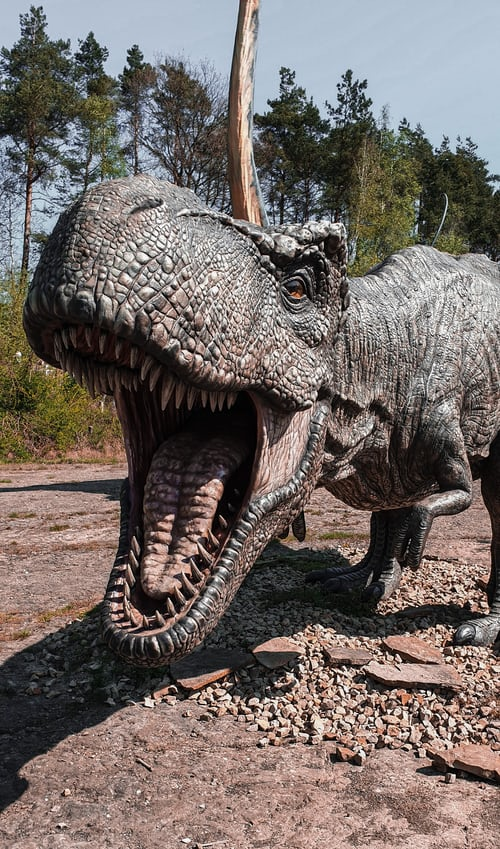

The most famous ceratopsian is Triceratops, with its three horns. But Triceratops is just one member of this large family of dinosaurs, each with its own unique appearance. A wide variety of reptiles, mammals and insects have horns or similar features.
It was a large sauropod, a group of typically large dinosaurs with long necks and long tails. It lived during the Late Jurassic Period, from about 156 to 145 million years ago. The first recorded evidence of Brontosaurus was discovered in the 1870s in the USA.

Tyrannosaurus is a genus of tyrannosaurid theropod dinosaur. The species Tyrannosaurus rex, often called T. rex or colloquially T-Rex, is one of the best represented of these large theropods. Tyrannosaurus lived throughout what is now western North America, on what was then an island continent known as Laramidia.
